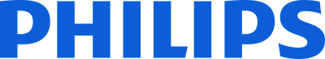

John Kidd / Cincinnati, OH
Enterprise Imaging Architect.
I design and modernize enterprise imaging platforms for multi-hospital health systems, connecting radiology and cardiology with the rest of the clinical enterprise.
Explore my architecture focus01 / Architecture
Design for the whole imaging enterprise.
With 13+ years in healthcare IT, I translate clinical needs into target-state designs and help teams carry them through implementation, cutover, and stabilization.
Target-state imaging architecture
Define how PACS, vendor-neutral archives, enterprise viewers, and reporting platforms fit together across hospitals and ambulatory sites.
Clinical interoperability by design
Map how orders, images, and results move across systems. Design the DICOM and HL7 integrations, modality worklists, and routing rules that support that workflow.
Modernization & migration
Plan upgrades, platform migrations, and Azure-hosted application transitions around dependencies, integration testing, cutover, and post-go-live stabilization.
Technical leadership & operational readiness
Bring clinical, infrastructure, security, interface, and vendor teams together to validate workflows, plan for downtime, and prepare for go-live.
02 / Technology experience
Vendors & platforms
A selection of platforms I’ve worked with across imaging, clinical systems, interoperability, and AI.
Merge
PACS · Universal Viewer

Philips
IntelliSpace Cardiovascular
Intelerad
Enterprise imaging
Epic
Radiant radiology workflows
MEDITECH
EHR integration
Laurel Bridge
Compass DICOM routing
Aidoc
Clinical AI integration
Viz.ai
Imaging AI integration
Logos identify platforms I’ve worked with. They do not imply affiliation or endorsement.
03 / Connect
Planning an imaging modernization?
Let’s talk about designing an imaging environment that works across sites, specialties, and vendors.